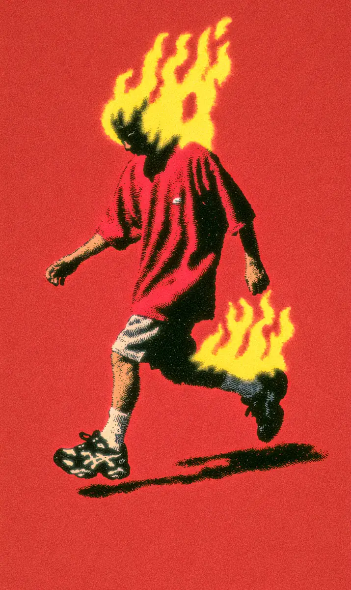

주문 벨이 울린 지 정확히 3초가 지났다.
Exactly three seconds had passed since the order bell rang.
도민수는 벌써 짜장면 한 그릇을 들고 사거리를 지나가고 있었다.
Do Min-su was already passing the intersection, holding a bowl of jjajangmyeon.
너무 빨리 달려서 그의 머리에는 불이 붙어 있었다.
He ran so fast that his head had caught fire.
동네 사람들은 그를 그냥 “불꽃”이라고 불렀다.
The neighborhood people just called him “Flame.”
“불꽃 아저씨, 오늘도 머리 타요!”
“Mister Flame, your head is burning again today!”
아이들이 손을 흔들며 소리쳤지만, 그는 이미 저 멀리 사라진 뒤였다.
The children shouted and waved, but he had already vanished far into the distance.
민수에게 배달은 전쟁이었고, 시간은 적이었다.
To Min-su, delivery was war, and time was the enemy.
그는 자동차보다 빨랐고, 오토바이보다 빨랐고, 심지어 자기 그림자보다도 빨랐다.
He was faster than cars, faster than motorbikes, and even faster than his own shadow.
고속도로에서 스포츠카 운전자가 창밖으로 그를 봤다.
On the highway, a sports car driver saw him out the window.
“저게 사람이야, 불이야?”
“Is that a person or a fire?”
민수는 웃으며 손을 흔들었고, 3초 뒤에는 이미 다음 동네에 있었다.
Min-su smiled and waved, and three seconds later he was already in the next neighborhood.
첫 번째 배달은 뜨거운 짜장면이었다.
The first delivery was hot jjajangmyeon.
손님이 문을 열었을 때, 면은 여전히 김이 나고 있었다.
When the customer opened the door, the noodles were still steaming.
“어떻게 이렇게 따뜻하죠?”
“How is it still so warm?”
“제 머리 덕분입니다.”
“Thanks to my head.”
민수는 불타는 머리를 가리키며 진지하게 대답했다.
Min-su pointed at his burning head and answered seriously.
두 번째 배달은 결혼반지였다.
The second delivery was a wedding ring.
신랑이 예식장에서 반지를 집에 두고 온 것이었다.
The groom had left the ring at home at the wedding hall.
“3분 안에 오지 않으면 결혼식이 끝나요!”
“If it doesn’t arrive within three minutes, the wedding is over!”
민수는 전화를 끊기도 전에 이미 반지를 신랑 손에 쥐여 주고 있었다.
Before the groom even hung up the phone, Min-su was already placing the ring in his hand.
신부가 감동해서 울었지만, 사실은 민수의 머리 연기 때문이었다.
The bride cried with emotion, but really it was because of the smoke from Min-su’s head.
세 번째 배달은 잃어버린 고양이였다.
The third delivery was a lost cat.
할머니가 옥상에 올라간 고양이를 못 내려오게 하고 있었다.
An old woman couldn’t get her cat to come down from the rooftop.
민수는 계단을 밟지도 않고 옥상까지 뛰어올라갔다.
Min-su leaped all the way to the rooftop without even touching the stairs.
고양이는 불타는 머리를 보고 깜짝 놀라 그의 품으로 뛰어들었다.
The cat, startled by the burning head, jumped straight into his arms.
“고양이도 배달이 되나요?”
“Can you deliver a cat too?”
“저는 뭐든지 배달합니다. 얼음만 빼고요.”
“I deliver anything. Except ice.”
그날 오후, 다른 배달부 최준호가 오토바이를 타고 나타났다.
That afternoon, another delivery man, Choi Jun-ho, showed up on a motorbike.
“오늘은 내가 이긴다, 불꽃!”
“Today I win, Flame!”
준호가 액셀을 밟으며 소리쳤다.
Jun-ho shouted, stepping on the accelerator.
민수는 천천히 걷기 시작했고, 그래도 준호를 세 바퀴나 앞질렀다.
Min-su started walking slowly, and still lapped Jun-ho three times.
준호는 신호등 앞에서 멈췄지만, 민수는 신호등을 아예 지나쳐 버렸다.
Jun-ho stopped at the traffic light, but Min-su blew right past it.
경찰이 호루라기를 불었지만, 소리가 도착했을 때 민수는 이미 없었다.
A police officer blew his whistle, but by the time the sound arrived, Min-su was already gone.
모든 것이 완벽했다.
Everything was perfect.
딱 하나만 빼고.
Except for one thing.
저녁에 한 아이가 아이스크림을 주문했다.
In the evening, a child ordered ice cream.
민수는 세상에서 가장 빠른 사람이었으니 문제없을 거라고 생각했다.
Min-su thought there would be no problem, since he was the fastest person in the world.
그는 아이스크림 가게에서 아이의 집까지 0.5초 만에 도착했다.
He arrived from the ice cream shop to the child’s house in half a second.
하지만 상자를 열자, 안에는 달콤한 물만 가득했다.
But when he opened the box, it was full of nothing but sweet water.
“녹았어요...”
“It melted...”
아이가 실망한 얼굴로 말했다.
The child said with a disappointed face.
민수는 자기 불타는 머리를 올려다보았다.
Min-su looked up at his burning head.
세상에서 가장 빠른 남자에게도, 절대 배달할 수 없는 것이 하나 있었다.
Even for the fastest man in the world, there was one thing he could never deliver.
바로 차가운 것이었다.
And that was anything cold.